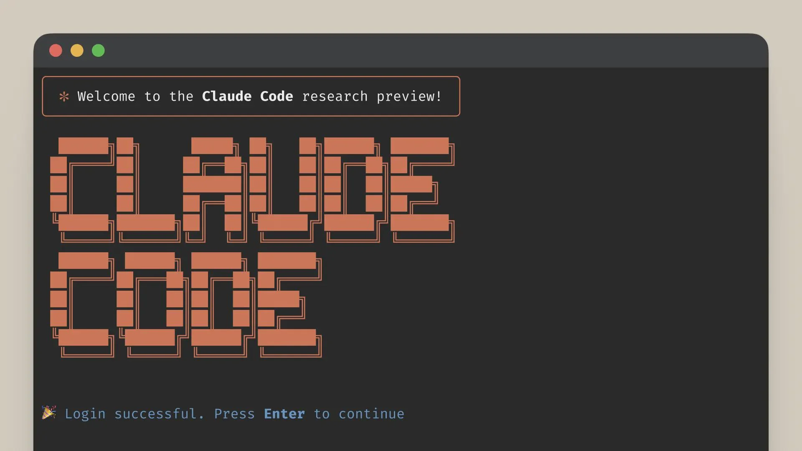
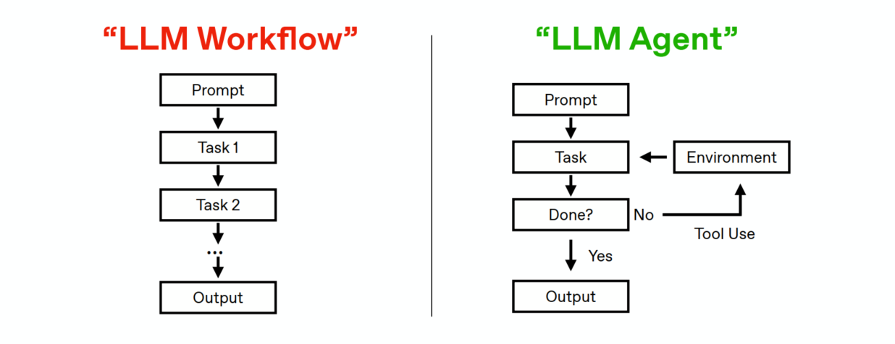

Claude Code Practical Guide
Claude Code Practical Guide

This is a desktop-first practical guide to Claude Code: it explains core concepts, then walks through installation and safe day-to-day use in the Desktop app. If you need terminal/editor/web routes, the appendix includes concise setup paths for CLI, IDE, and web workflows.
1. What is Claude Code?
Claude Code is an agentic coding environment from Anthropic for end-to-end software tasks: understanding a codebase, proposing and applying edits, running commands, and iterating with human approval (official overview).
A useful way to think about it:
- Traditional AI coding assistants mostly complete or suggest code.
- Claude Code behaves more like a working agent loop: plan -> act with tools -> validate -> revise.
Compared with pure chat coding:
- It operates in real project context (files, folders, repo state).
- It supports permission gates and explicit review before changes.
- It is available across Desktop, Terminal CLI, IDE integrations, and web-oriented workflows.
Why this matters in analytics and product work:
- Faster implementation of data and automation tasks.
- More consistent debugging and project handoff notes.
- Better support for iterative, reviewable engineering workflows.
2. What is an AI Agent?
An AI coding agent is not just autocomplete. It typically loops through:
- Understand the goal.
- Build a plan.
- Use tools (read files, run commands, edit code).
- Check outputs and errors.
- Iterate until completion (with human control).
Claude Code explicitly supports this mode with planning, permission control, and iterative execution patterns (desktop docs, overview).
Workflow vs Agent comparison diagram:

Interpretation:
- Left side (LLM Workflow) is mostly linear: prompt -> fixed task chain -> output.
- Right side (LLM Agent) adds environment feedback and tool use, with a completion check (Done?) before final output.
- Claude Code aligns more with the right-side pattern: iterative, tool-using, and context-aware.
3. Claude Code product forms: Desktop vs CLI vs IDE extension vs SDK/Headless
Claude Code runs across multiple surfaces that share a common core engine (overview).
| Surface | Best use case | What it does well | Key limits |
|---|---|---|---|
| Desktop (Code tab) | Visual, interactive coding sessions | Diff review UI, approvals, file attachments, low terminal friction (desktop quickstart) | No Linux desktop app; less suited for heavy automation (desktop docs) |
| CLI | Automation, scripting, CI | Pipe/print workflows, shell composability (overview) | Requires terminal comfort |
| IDE extension (VS Code/JetBrains) | In-editor workflow continuity | Works directly in editor context (overview) | Depends on extension/IDE setup |
| Agent SDK (Headless) | Build custom agent systems | Programmatic agent workflows in Python/TypeScript (SDK) | Requires API-key engineering setup |
Desktop vs CLI highlights:
- Same core engine; shared config can include
CLAUDE.md, MCP settings, hooks, and skills. - Desktop is best for visual review and guided interaction.
- CLI is better for scripted, non-interactive, and pipeline-heavy flows.
4. What is CLI
CLI (Command Line Interface) means controlling tools
through typed commands in a terminal.
Why it matters:
- Reproducibility: command history and scripts.
- Automation: repeatable tasks across datasets/repos.
- Deployment compatibility: cloud/SSH/CI systems are terminal-first.
- Auditability: easier to explain exactly what ran.
In this guide, concrete CLI operations are intentionally moved to
Section 9. Appendix: Alternative setup paths (Terminal / IDE / Web)
so the main flow stays Desktop-first.
5. Other Coding Agents in 2026
Model availability can vary by plan, region, and release date.
| Tool | Company | Primary interface | LLM (example models) | Payment |
|---|---|---|---|---|
| GitHub Copilot + Coding Agent | GitHub (Microsoft) | IDE + GitHub | GPT-5 family, Claude family, Gemini family (supported models) | Free tier available; paid plans include Pro / Pro+ / Business / Enterprise (plans) |
| Cursor | Anysphere | AI code editor | GPT-5 family, Claude family, Gemini family (models) | Hobby (free) plus Pro / Ultra / Teams / Enterprise (pricing) |
| Gemini CLI | Terminal | Gemini family (model docs) | Free usage path with personal-account limits (for example, up to 60 requests/minute and 1,000 requests/day); paid usage via Gemini API/Vertex billing (CLI docs, pricing) | |
| OpenAI Codex CLI | OpenAI | Terminal (+ IDE/app/web options) | GPT family (Codex repo, OpenAI models) | Works with ChatGPT plans (Plus/Pro/Team/Edu/Enterprise) or API-key billing (Codex repo, plan note) |
6. Preflight checklist (accounts, OS, Git, terminal basics)
Account and plan
- You need to have a Claude account.
- For Desktop
Codetab, you need an eligible paid plan (Pro/Max/Teams/Enterprise) (desktop quickstart).
OS and support
- macOS: Desktop app supported.
- Windows: x64 supported; ARM64 support has evolved and should be confirmed in current desktop docs.
- Linux: Desktop app not currently supported.
Local prerequisites
- On Windows, Git is required for local Desktop coding sessions (desktop quickstart).
- Basic terminal literacy helps even for Desktop workflows.
7. Desktop app setup and configuration (step-by-step)
Step 1: Download the desktop app
Goal: Install Claude Desktop for your operating system.
Action: Open https://claude.ai/download,
choose the correct installer, and complete installation.
What success looks like: Claude launches from Applications
(macOS) or Start menu (Windows).

Step 2: Sign in and enter Code mode
Goal: Activate coding workflow in Desktop.
Action: Sign in, then switch to the Code tab.
What success looks like: You can start a local coding
session.

Step 3: Connect local project and set safe defaults
Goal: Configure a safe first session.
Action:
- Choose a local project folder.
- Keep permission mode on
Ask permissions. - Select model and start with a read-only analysis prompt.
What success looks like: Claude can inspect project
structure and propose changes without auto-editing.

Suggested first prompt:
Read this repository and summarize:
1) objective,
2) key data/code entry points,
3) top implementation risks,
4) one high-impact improvement.Step 4: Review diffs and approve intentionally
Goal: Maintain human control and code quality.
Action: Review each proposed diff before accepting.
What success looks like: You can explain every accepted
change and why it was approved.
8. Quick reference (desktop, glossary, links)
A. Desktop quick checks
- App launches and sign-in succeeds.
Codetab is available.- Local project folder is selected correctly.
- Permission mode is
Ask permissionsfor early sessions. - You review diffs before accepting edits.
B. Mini glossary
Agent: Tool-using AI workflow that can plan, act, and iterate.CLI: Command line interface for scriptable/reproducible workflows.MCP: Open protocol for connecting tools/context.Permission mode: Agent autonomy policy.Worktree: Git mechanism for parallel branches/workspaces.Headless: Programmatic, non-UI execution.
C. Quick links
- Claude Code overview: https://code.claude.com/docs/en/overview
- Desktop quickstart: https://code.claude.com/docs/en/desktop-quickstart
- Desktop docs: https://code.claude.com/docs/en/desktop
- Agent SDK: https://docs.anthropic.com/en/docs/claude-code/sdk
9. Appendix: Alternative setup paths (Terminal / IDE / Web)
This appendix contains the other three setup paths.
A. Terminal CLI path
Goal: Install and run Claude Code in terminal.
Command (Windows PowerShell):
irm https://claude.ai/install.ps1 | iexCommand (macOS/Linux):
curl -fsSL https://claude.ai/install.sh | bashCommand (Windows WinGet optional):
winget install Anthropic.ClaudeCodeCommand (verify):
claude --version
claude --helpWhat success looks like: claude starts and
accepts prompts in your project directory.


B. IDE path (VS Code)
Goal: Use Claude Code within editor workflow.
Steps:
- Ensure CLI is installed first.
- Install/open the Claude-related extension/workflow in VS Code.
- Sign in and run Claude from editor context.
What success looks like: You can invoke Claude from VS
Code and operate on the current workspace.


C. Web path
Goal: Use Claude coding workflows through web interface
flow.
Steps:
- Sign in on web interface.
- Open the coding workspace flow.
- Configure project/context and run your first task.
What success looks like: You can issue coding prompts in
web context and review outputs.


10. References
- Bannerbear tutorial (source referenced for installation flow + screenshots): https://www.bannerbear.com/blog/how-to-install-claude-code-terminal-ide-web-desktop-setup/
- Claude Code overview: https://code.claude.com/docs/en/overview
- Claude Desktop quickstart: https://code.claude.com/docs/en/desktop-quickstart
- Claude Desktop docs: https://code.claude.com/docs/en/desktop
- Claude Code SDK: https://docs.anthropic.com/en/docs/claude-code/sdk
- GitHub Copilot plans: https://github.com/features/copilot/plans
- GitHub Copilot supported models: https://docs.github.com/copilot/using-github-copilot/ai-models/supported-ai-models-in-copilot
- Cursor models: https://docs.cursor.com/models
- Cursor pricing: https://cursor.com/pricing
- Gemini CLI docs: https://google-gemini.github.io/gemini-cli/docs/
- Gemini CLI model docs: https://google-gemini.github.io/gemini-cli/docs/cli/model/
- Gemini API pricing: https://ai.google.dev/gemini-api/docs/pricing
- OpenAI Codex repo: https://github.com/openai/codex
- OpenAI models: https://developers.openai.com/api/docs/models
- OpenAI Codex + ChatGPT plan note: https://help.openai.com/en/articles/11096431-using-codex-with-your-chatgpt-plan